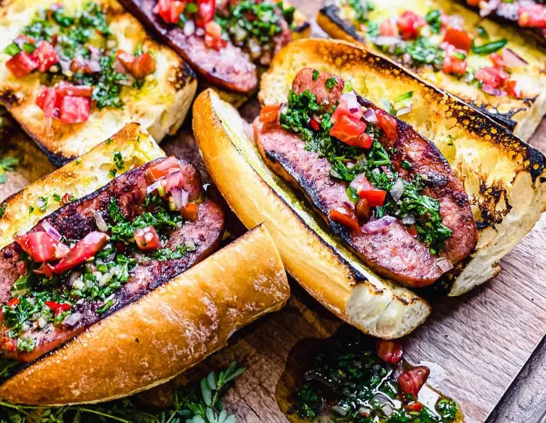

Choripan Recipe

Choripán is a combination of the words chorizo (sausage) and pan (bread). The sandwich is served on a French baguette cut into roughly six inch sections, then lengthwise like a hot dog bun.
Ingredients
- 1 lb Argentinian Chorizo
- 1-2 french baguette(s), cut into chorizo length pieces
- 1 tbsp olive oil
- 1 cup chimichurri
Directions
Fire up the Grill.
- Light grill and set up for direct medium high heat.
- Place the chorizo on the grill over direct heat, turning them often in order to get a nice char on the outside. Then, remove from the grill.
Onto the Bread.
- Butterfly the chorizo by making a cut running the length of the link. Then spread the link open, exposing the inside of the sausage. Slice the baguette pieces open like a hot dog bun, and drizzle the inside of the bread with olive oil.
- Place the chorizo and bread cut side down on the grill. Char the inside of the chorizo and lightly brown the bread
Serve hot and Enjoy!
- Remove the bread and chorizo from the grill, and assemble sandwiches with chimichurri. Serve hot.